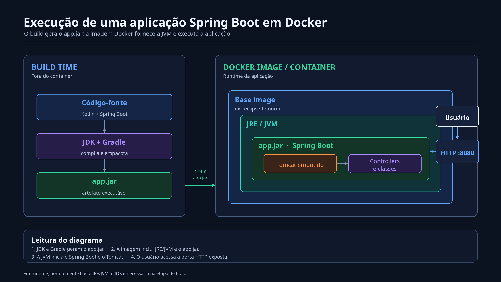
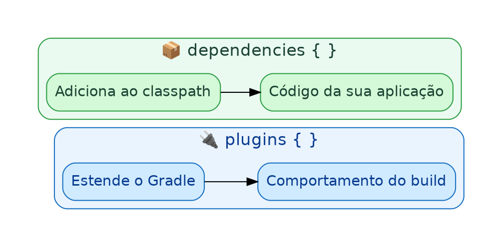
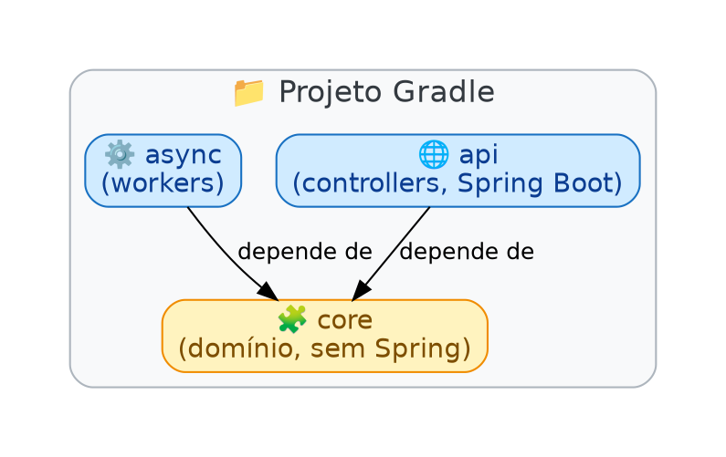
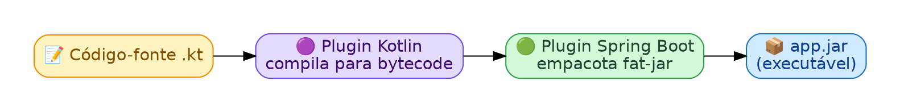
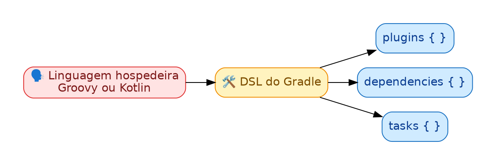
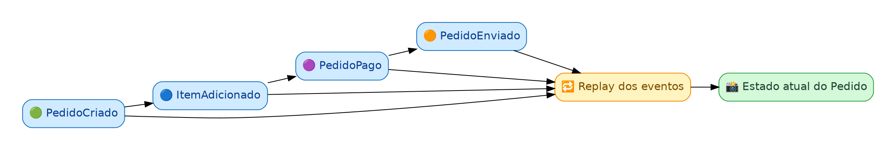
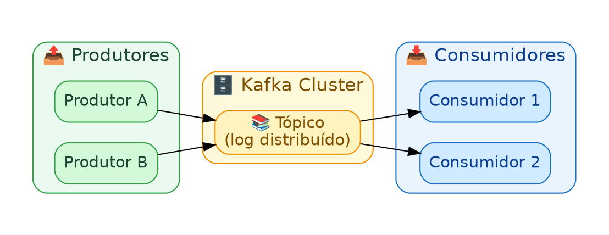
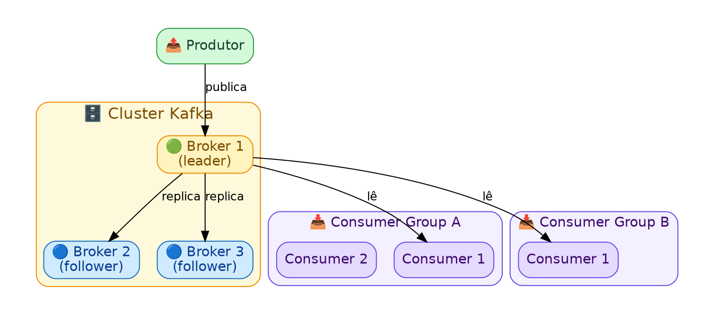
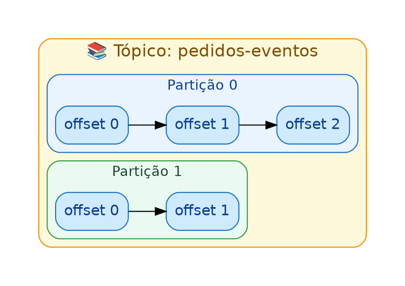

FAQ
Perguntas e respostas sobre o projeto. Cada seção corresponde a um tópico listado em questions.txt e linkado a partir do README.md.
Como a aplicação é construída e executada

O diagrama apresenta dois momentos diferentes do ciclo de vida da aplicação: o build time, quando o código-fonte é transformado em um programa executável, e o runtime, quando esse programa está efetivamente rodando dentro de um container Docker.
1. Build time
Build time é a etapa de construção da aplicação. Nesse momento, o programa ainda não está atendendo requisições de usuários.
Código-fonte
O código-fonte é o conjunto de arquivos escritos pelo desenvolvedor. Neste projeto, ele é escrito em Kotlin e utiliza o Spring Boot para criar a aplicação web.
Arquivos como Application.kt e HelloController.kt descrevem o comportamento da aplicação, mas não são executados diretamente pelo sistema operacional.
JDK
O JDK, ou Java Development Kit, contém as ferramentas utilizadas no desenvolvimento de aplicações Java e Kotlin. Entre elas está o compilador responsável por transformar o código-fonte em bytecode, formato que pode ser entendido pela JVM.
O JDK é necessário principalmente durante o desenvolvimento e o build. Ele não precisa, obrigatoriamente, estar presente na imagem final usada para executar a aplicação.
Gradle
O Gradle é a ferramenta de automação de build do projeto. As instruções do arquivo build.gradle dizem ao Gradle quais dependências baixar, quais plugins utilizar, como compilar o código e qual artefato produzir.
Ao executar:
./gradlew clean buildo Gradle limpa resultados anteriores, compila o projeto, executa as verificações configuradas e gera o arquivo jar.
O arquivo app.jar
O jar, abreviação de Java Archive, é o artefato executável produzido pelo build. Ele reúne o bytecode da aplicação, metadados e as dependências necessárias para iniciar o Spring Boot.
Em uma aplicação Spring Boot, esse arquivo também inclui o servidor web embutido. Ele pode ser iniciado com um comando semelhante a:
java -jar app.jar2. Runtime no container
Runtime é o momento em que o programa está em execução e pode receber requisições. No diagrama, essa execução acontece dentro de um container Docker.
Docker image
Uma Docker image é um pacote imutável usado como modelo para criar containers. Ela reúne o ambiente de execução e os arquivos da aplicação em camadas reproduzíveis.
A imagem não é o processo em execução. Quando ela é iniciada, o Docker cria um container, que é a instância executável dessa imagem.
Base image
A base image é a camada inicial usada para construir a imagem da aplicação. Uma opção comum para projetos Java é eclipse-temurin, que fornece uma distribuição do Java adequada para executar o programa.
Usar uma base image padronizada evita depender do Java instalado diretamente na máquina que hospedará a aplicação.
JRE e JVM
O JRE, ou Java Runtime Environment, representa o ambiente necessário para executar programas Java. Seu componente central é a JVM, ou Java Virtual Machine.
A JVM lê e executa o bytecode contido no jar. Essa separação permite que o mesmo artefato seja executado em diferentes sistemas operacionais, desde que exista uma JVM compatível.
Em termos simples:
- o JDK é usado para desenvolver e compilar;
- a JVM é responsável por executar;
- o ambiente de runtime fornece a JVM e as bibliotecas necessárias durante a execução.
Spring Boot
O Spring Boot simplifica a configuração e a inicialização de aplicações Spring. Quando a JVM executa o app.jar, o método main inicia o contexto da aplicação, configura os componentes e prepara o servidor web.
Ele também procura classes como controllers e registra os endpoints definidos por anotações, por exemplo @RestController e @GetMapping.
Tomcat embutido
O Tomcat é o servidor web que recebe requisições HTTP e as encaminha para a aplicação. Neste projeto, ele é embutido: vem empacotado como dependência do jar e é iniciado automaticamente pelo Spring Boot.
Por isso, não é necessário instalar ou configurar um Tomcat externo para executar o projeto.
Controllers e classes da aplicação
Os controllers definem os pontos de entrada HTTP da aplicação. Quando uma requisição chega ao Tomcat, o Spring identifica qual controller atende à rota solicitada e executa o método correspondente.
As demais classes implementam regras de negócio, acesso a dados e outros comportamentos necessários ao sistema.
HTTP e porta 8080
O servidor embutido escuta uma porta de rede, normalmente a 8080. O container deve publicar essa porta para permitir acesso a partir da máquina hospedeira ou de outros serviços.
O fluxo de uma requisição é:
- o usuário envia uma requisição HTTP;
- a requisição chega à porta publicada pelo container;
- o Tomcat recebe a requisição;
- o Spring direciona a requisição ao controller correto;
- a aplicação processa a operação e devolve uma resposta HTTP.
Resumo do fluxo
O processo completo pode ser entendido assim:
- o desenvolvedor escreve o código-fonte em Kotlin;
- o JDK e o Gradle compilam e empacotam o projeto;
- o build produz um arquivo
jarexecutável; - o
jaré copiado para uma Docker image com um runtime Java; - um container é criado a partir dessa imagem;
- a JVM executa o
jar; - o Spring Boot inicia o Tomcat embutido e registra os endpoints;
- o usuário acessa a aplicação por HTTP na porta publicada.
A separação entre build e runtime torna a entrega mais previsível: o mesmo artefato e o mesmo ambiente podem ser executados em diferentes máquinas sem depender de configurações locais específicas.
No build.gradle, qual a diferença entre plugins e dependencies?
São duas responsabilidades diferentes dentro do build:

plugins {}— habilita capacidades no Gradle: novas tasks, convenções e DSLs. Ex:org.jetbrains.kotlin.jvmensina o Gradle a compilar.kt;org.springframework.bootadiciona a taskbootJare o suporte a "fat jar".dependencies {}— declara bibliotecas que seu código importa e usa em tempo de compilação/execução (ex:spring-boot-starter-web,kotlin-reflect).
Regra prática: se a pergunta é "o Gradle sabe fazer X?" → é plugin. Se é "meu código precisa importar uma classe de uma lib?" → é dependency. Um plugin geralmente traz junto dependencies padrão (ex: o plugin do Spring Boot já resolve versões via BOM), mas são conceitos independentes — dá pra ter plugin sem dependency e vice-versa.
Como funciona os módulos em um projeto Gradle/Spring Boot (Kotlin)? Para o quê eles servem? Resolve qual problema?
Um módulo Gradle é um subprojeto com seu próprio build.gradle e src/, listado em settings.gradle. Cada módulo compila separadamente e pode depender de outros:

projeto-raiz/
├── settings.gradle # include 'core', 'api'
├── core/ # regras de domínio, sem Spring
│ └── build.gradle
└── api/ # controllers, Spring Boot
└── build.gradle # implementation(project(":core"))Problema que resolve:
- Isolamento de responsabilidade —
corenão conhece Spring/web;apinão reimplementa domínio. - Build incremental — o Gradle só recompila o módulo que mudou (e quem depende dele), acelerando builds grandes.
- Reuso — vários módulos "de entrada" (
api,async, um worker, etc.) compartilham o mesmocoresem duplicar código. - Fronteiras explícitas — se
apitentar acessar algo deasync, e não houverimplementation project(':async')declarado, o build falha. Isso evita acoplamento acidental.
Sem módulos, tudo vive num src/main só: funciona para projetos pequenos, mas mistura domínio com infraestrutura (web, mensageria) conforme o projeto cresce.
O que é o gradle e como ele funciona com Spring Boot e Kotlin?
Gradle é a ferramenta de build: lê os arquivos build.gradle/build.gradle.kts, resolve dependências (baixando do Maven Central, por exemplo), compila o código e empacota o artefato final.

Papel de cada peça:
- Plugin Kotlin (
org.jetbrains.kotlin.jvm) — ensina o Gradle a entender.kte chamar o compilador Kotlin. - Plugin Spring (
org.jetbrains.kotlin.plugin.spring) — ajusta o compilador Kotlin para abrir classes anotadas com@Component,@Service, etc. (Kotlin éfinalpor padrão; Spring precisa criar proxies). - Plugin Spring Boot (
org.springframework.boot) — adiciona a taskbootJar, que empacota a aplicação + todas as dependências + servidor embutido num único.jarexecutável. io.spring.dependency-management— gerencia versões compatíveis entre si (BOM do Spring), evitando conflito de versões nas libs.
Na prática: você roda ./gradlew bootRun (ambiente de dev) ou ./gradlew build (gera o .jar em build/libs/), e o Gradle orquestra compilação Kotlin → empacotamento Spring Boot → artefato final, sem você precisar chamar kotlinc ou montar o jar manualmente.
O que é o DSL?
DSL, ou Domain-Specific Language, é uma linguagem criada para resolver problemas de um domínio específico, em vez de ser uma linguagem de propósito geral. Diferente de uma linguagem como Java ou Kotlin puros (que servem para qualquer tipo de programa), uma DSL expõe apenas o vocabulário necessário para a tarefa que ela representa.

O Gradle não inventa uma linguagem nova do zero: ele constrói uma DSL em cima de uma linguagem hospedeira (host language) — Groovy, nos arquivos build.gradle, ou Kotlin, nos arquivos build.gradle.kts. Blocos como plugins { }, dependencies { } e tasks { } não são palavras-chave da linguagem em si; são funções e blocos especiais que o Gradle disponibiliza para descrever "o que construir" sem que você precise escrever código de propósito geral.
Vantagem prática: a DSL guia o desenvolvedor. Em vez de escrever manualmente chamadas de API para registrar um plugin, você escreve algo declarativo:
plugins {
kotlin("jvm")
id("org.springframework.boot")
}Isso é mais legível e menos propenso a erro do que orquestrar manualmente cada etapa do build.
Qual a diferença entre build.gradle e build.gradle.kts? Quais as vantagens de usar Kotlin DSL?
Os dois arquivos descrevem exatamente a mesma coisa — plugins, dependências, tasks — mas usando linguagens hospedeiras diferentes:
build.gradle— escrito em Groovy, a DSL "clássica" do Gradle.build.gradle.kts— escrito em Kotlin, usando a Gradle Kotlin DSL.
Neste projeto, o módulo core usa build.gradle (Groovy), enquanto api e async usam build.gradle.kts (Kotlin) — os dois estilos convivem no mesmo build sem problema.
Vantagens do Kotlin DSL:
- Verificação em tempo de compilação — erros como
Unresolved reference: implementation(que apareceu quando o móduloasyncainda não tinha um plugin aplicado) são detectados antes mesmo de rodar o build, porque o script é compilado como código Kotlin de verdade. - Autocomplete e navegação na IDE — como o script é Kotlin tipado, a IDE sabe exatamente quais métodos e propriedades existem em cada bloco (
plugins,dependencies,kotlin { }), oferecendo sugestões e "ir para definição". - Refatoração segura — renomear ou mover algo referenciado no build script é rastreado como qualquer outro código Kotlin.
- Consistência de linguagem — times que já escrevem a aplicação em Kotlin não precisam alternar contexto para Groovy só para mexer no build.
Desvantagem/trade-off: scripts Kotlin DSL são compilados, então a primeira execução (ou after clean) tende a ser um pouco mais lenta que a equivalente em Groovy, que é interpretado dinamicamente.
Quais diferenças entre as sintaxes e semânticas entre build.gradle e build.gradle.kts? Qual a linguagem de cada uma?
build.gradleé escrito em Groovy, uma linguagem dinâmica para a JVM.build.gradle.ktsé escrito em Kotlin, uma linguagem estaticamente tipada para a JVM.
Comparando a sintaxe lado a lado, usando os plugins deste próprio projeto:
// core/build.gradle (Groovy)
plugins {
id 'org.jetbrains.kotlin.jvm'
}
dependencies {
implementation 'org.springframework.boot:spring-boot-starter-web'
}// api/build.gradle.kts (Kotlin)
plugins {
kotlin("jvm")
}
dependencies {
implementation("org.springframework.boot:spring-boot-starter-web")
}Principais diferenças semânticas:
| Aspecto | Groovy (build.gradle) |
Kotlin (build.gradle.kts) |
|---|---|---|
| Tipagem | Dinâmica — erros de digitação só aparecem em tempo de execução do script | Estática — erros aparecem em tempo de compilação |
| Aspas em IDs de plugin/dependência | Aspas simples opcionais em vários contextos: id 'x' |
Aspas duplas e parênteses obrigatórios: id("x") |
| Chamada de método sem parênteses | Permitida: implementation 'lib' |
Não permitida: precisa de implementation("lib") |
| Atalhos específicos do Gradle | — | kotlin("jvm") é um atalho de extensão só disponível na Kotlin DSL, equivalente a id("org.jetbrains.kotlin.jvm") |
| Autocomplete/IDE | Limitado, baseado em convenção | Completo, baseado em tipos reais |
Na prática, ambos compilam para o mesmo modelo de build do Gradle — a escolha da linguagem hospedeira não muda o que o build faz, apenas como ele é escrito e verificado.
Event Source: Teoria e Arquitetura de Software
Nota: o termo correto é Event Sourcing (fonte de eventos), um padrão arquitetural.
Em uma aplicação "tradicional" (CRUD), o banco de dados guarda apenas o estado atual de uma entidade: quando um pedido muda de status, a linha antiga é sobrescrita e a informação de como se chegou ali se perde.
Event Sourcing inverte essa lógica: em vez de persistir o estado atual, persiste-se a sequência imutável de eventos que descreve tudo o que aconteceu. O estado atual deixa de ser a fonte de verdade e passa a ser apenas uma projeção derivada — recalculada a partir da soma (replay) dos eventos.

Conceitos centrais:
- Evento — um fato imutável que já aconteceu, sempre no passado (
PedidoCriado,PedidoPago). Uma vez gravado, nunca é alterado ou apagado. - Event Store — o banco (ou log) onde os eventos são anexados em ordem (append-only). É a fonte de verdade do sistema.
- Stream — a sequência de eventos pertencentes a uma mesma entidade/agregado (ex.: todos os eventos do
Pedido#123). - Replay — processo de ler os eventos de um stream, do início, e aplicá-los um a um para reconstruir o estado atual.
- Projeção (read model) — uma "view" otimizada para leitura, construída a partir dos eventos (ex.: uma tabela SQL com o estado atual, atualizada conforme os eventos chegam). Pode haver várias projeções diferentes para o mesmo stream de eventos.
- Snapshot — uma foto do estado em um determinado ponto, usada para evitar reprocessar um stream muito longo do zero a cada leitura.
Problema que resolve:
- Auditoria completa — sabe-se exatamente o que aconteceu, quando e por quê, não apenas o estado final.
- Debug e reconstrução histórica — é possível "voltar no tempo" e ver o estado da entidade em qualquer momento passado.
- Novas projeções sem perda de dados — se uma nova necessidade de leitura surgir, basta reprocessar os eventos existentes para gerar uma nova projeção, sem precisar migrar dados destrutivamente.
- Integração natural com sistemas assíncronos/distribuídos — os eventos já são o formato ideal para serem publicados em um message broker (como o Kafka) e consumidos por outros serviços.
Trade-offs: mais complexidade de implementação (é preciso lidar com versionamento de eventos, eventual consistency entre escrita e leitura, e crescimento do event store), então normalmente é usado apenas em domínios onde o histórico de mudanças tem valor de negócio real.
O que é o Kafka?
Apache Kafka é uma plataforma distribuída de streaming de eventos: um sistema de mensageria que funciona como um log de eventos duráveis, ordenados e replicados, ao qual produtores escrevem e do qual consumidores leem — de forma desacoplada no tempo.

Diferente de uma fila tradicional (onde a mensagem some após ser consumida), o Kafka retém as mensagens por um período configurável (ou indefinidamente), permitindo que vários consumidores independentes leiam o mesmo dado, cada um no seu próprio ritmo — o que combina muito bem com Event Sourcing: os eventos gravados no event store podem ser publicados no Kafka para alimentar outros serviços/projeções.
Casos de uso típicos: comunicação assíncrona entre microsserviços, pipelines de dados em tempo real, agregação de logs, e como backbone de arquiteturas orientadas a eventos.
Como ele funciona? (Kafka em detalhes)
▶ Versão animada, cena a cena: Kafka em Movimento — tópicos, partições, offsets, consumer groups, rebalance e o plano de controle (ZooKeeper / KRaft).

Broker
Um broker é um servidor Kafka responsável por armazenar dados e atender requisições de produtores e consumidores. Um cluster é formado por vários brokers trabalhando juntos, o que dá escalabilidade horizontal e tolerância a falhas.
Tópico (topic)
Um tópico é a categoria/nome lógico sob o qual as mensagens são publicadas — equivalente a uma "tabela" de eventos (ex.: pedidos-eventos). Produtores escrevem em um tópico; consumidores leem de um tópico.
Partição (partition)
Cada tópico é dividido em uma ou mais partições. Uma partição é um log ordenado e imutável de mensagens, onde cada mensagem recebe um identificador sequencial chamado offset.

- Dividir um tópico em partições é o que permite paralelismo: cada partição pode ser lida/escrita de forma independente, e diferentes partições podem viver em brokers diferentes.
- A ordem das mensagens é garantida dentro de uma mesma partição, não entre partições diferentes do mesmo tópico.
- O produtor decide em qual partição uma mensagem vai (por padrão, com base em uma chave — mensagens com a mesma chave sempre vão para a mesma partição, preservando ordem para aquela chave. Ex.: usar o ID do pedido como chave garante que todos os eventos daquele pedido fiquem na mesma partição, em ordem).
Réplicas e Leader/Follower
Cada partição pode ter várias réplicas distribuídas entre brokers diferentes, para tolerância a falhas. Uma réplica é eleita leader (atende todas as leituras e escritas daquela partição) e as demais são followers (replicam passivamente os dados do leader). Se o broker do leader cair, um follower é promovido a novo leader automaticamente, sem perda de dados já confirmados.
Produtor (producer)
O produtor é a aplicação que publica mensagens em um tópico. Ele escolhe (ou deixa o Kafka escolher) a partição de destino e pode configurar o nível de confirmação (acks) exigido antes de considerar a escrita bem-sucedida (ex.: esperar que apenas o leader confirme, ou que todas as réplicas confirmem).
Consumidor e Consumer Group
O consumidor é a aplicação que lê mensagens de um tópico, avançando seu próprio offset de leitura (o Kafka não remove a mensagem após a leitura). Consumidores são organizados em consumer groups:
- Dentro de um mesmo consumer group, cada partição é lida por apenas um consumidor por vez — isso distribui a carga de leitura entre as instâncias do grupo.
- Grupos diferentes são independentes: cada grupo mantém seu próprio progresso (offset) e pode ler o tópico inteiro do seu próprio jeito, sem afetar outros grupos.
Isso é o que permite, por exemplo, que um serviço de faturamento e um serviço de notificações leiam os mesmos eventos de pedido de forma totalmente desacoplada, cada um no seu ritmo.
Retenção
O Kafka retém mensagens por um tempo configurável (ex.: 7 dias) ou por tamanho, independentemente de terem sido consumidas ou não. Isso permite reprocessar o histórico (replay), característica que se encaixa diretamente no padrão de Event Sourcing descrito acima: o Kafka pode atuar como o próprio event store, ou como o canal de distribuição dos eventos gravados em um event store separado.
Resumo do fluxo de uma mensagem
- o produtor envia uma mensagem para um tópico, com uma chave opcional;
- o Kafka calcula/usa a partição de destino com base na chave;
- a mensagem é anexada ao final do log daquela partição, no broker que é o leader;
- o leader replica a mensagem para os brokers followers da partição;
- após confirmação (conforme
acks), a escrita é considerada concluída; - cada consumer group lê a partição a partir do seu último offset registrado, de forma independente dos demais grupos;
- o consumidor processa a mensagem e, periodicamente, confirma (commit) o avanço do seu offset.